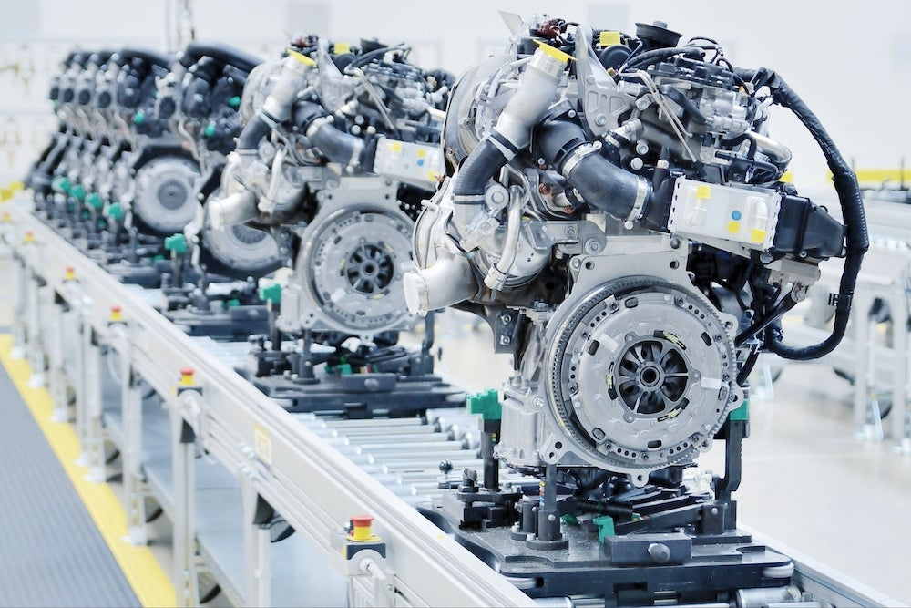
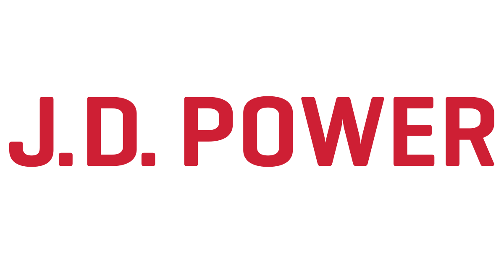
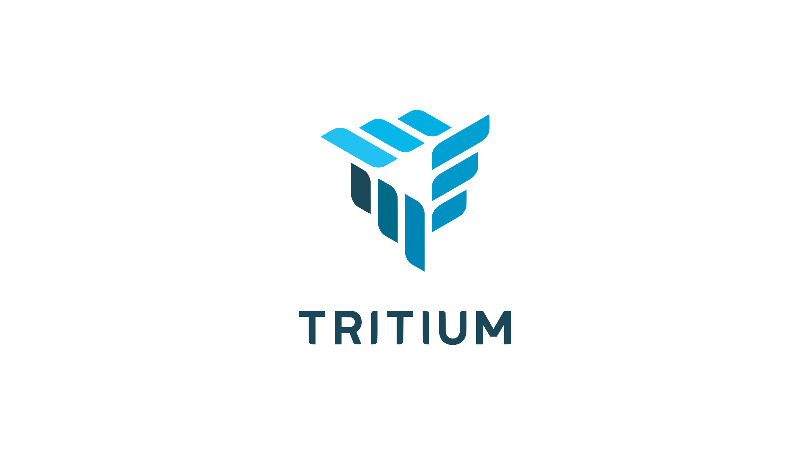
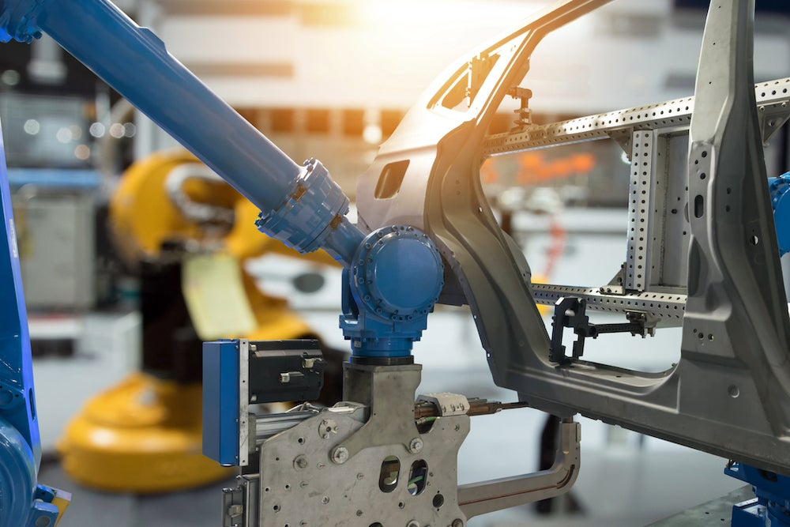
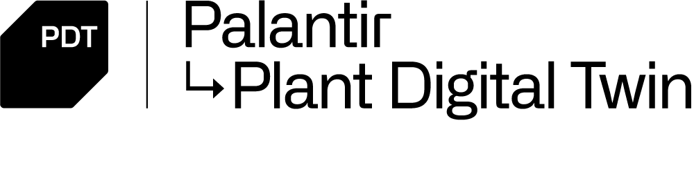

Palantir Foundry
关于本体
行业
功能
学习 Foundry
立即开始构建
汽车与出行
出行正处于全面转型的风口浪尖。
Palantir 及其客户正引领这一变革。
关于我们的工作
作为全球领先的汽车软件应用之一，Palantir Foundry 正在为出行革命提供强大动力。全球排名前十的大部分原始设备制造商 (OEM) 以及 30 多家主要汽车零部件供应商，都在使用我们的软件来分析和理解他们的数据。
从设计到总装——再到营销、销售以及路面行驶——每辆车都会产生海量数据。Palantir Foundry 为汽车生态系统提供了一套端到端的解决方案。
它可将车辆数据的全生命周期集成到一个协同环境中进行分析。原始设备制造商、供应商、经销商及其他出行领域的参与者能在几周内释放其数据价值，从而加速业务增长、降低成本，并塑造出行的未来。
了解更多关于我们的产品。 →
我们的合作伙伴
向左
向右
汽车 // 影响力
Stellantis
最大化跨国制造效益
Stellantis 在跨国品牌、业务部门和工厂 locations 部署了 Palantir Foundry，以加速其数字化转型，包括提升供应链绩效、增强车辆质量并加快交付速度。
了解更多 →

汽车 // 影响力

J.D. Power
实现数十亿数据点的业务化运营
借助数十亿的车辆配置和性能数据点，J.D. Power 利用 Palantir AIP 和 Foundry 将这种超大规模信息投入实际运营，并支持开发新的分析模型和工作流解决方案。
了解更多 →
航空 // 影响力
Airbus
全球航空平台
跨团队的高效协作使 A350 的交付速度提升了 33%。此外，作为拥有 100 多家参与航空公司的全球平台 Skywise 的一部分，还利用 AI 加速了供应链协同。
了解更多 →
汽车 // 影响力

Tritium
构建数字供应链
Tritium 部署了 Palantir 来构建其供应链的数字孪生。借此，他们创建了零部件短缺模拟器。该工具减少了生产停机时间，使 Tritium 的制造计划提升了 40%。
了解更多 →

我们的产品
Foundry 的质量管理系统 (QMOS) 集成了来自供应商、经销商、诊断故障代码、联网车辆远程信息处理、保修索赔等方面的相关数据，以提供全面的的质量视图——从而实现更快的问题识别与解决。
↳ 了解更多
Palantir 的零部件性能监控器 (CPM) 使原始设备制造商和供应商能够有效地准备和集成他们的数据，以便团队可以专注于协同工作，为即将出现的问题寻找解决方案。这种协同且数据驱动的工作流使原始设备制造商能够在问题导致大量故障、召回和质量成本之前将其解决。
↳ 了解更多
通过一个透明的全球供应链数字孪生来管理供应链中的意外冲击，该孪生系统能够主动显示潜在问题，如工厂停工、生产瓶颈和物流延迟。在此数据资产上应用复杂的“假设”情景分析，以动态选择最佳的采购和分销策略。
↳ 了解更多

Foundry 的工厂数字孪生 (PDT) 使制造团队能够通过集成的反馈环来优化生产，从而减少返工、提升现场性能，并加快关键调查的周转时间。它可以帮助应对不可预见的生产变更和供应链中断，同时不牺牲对质量和安全的承诺。